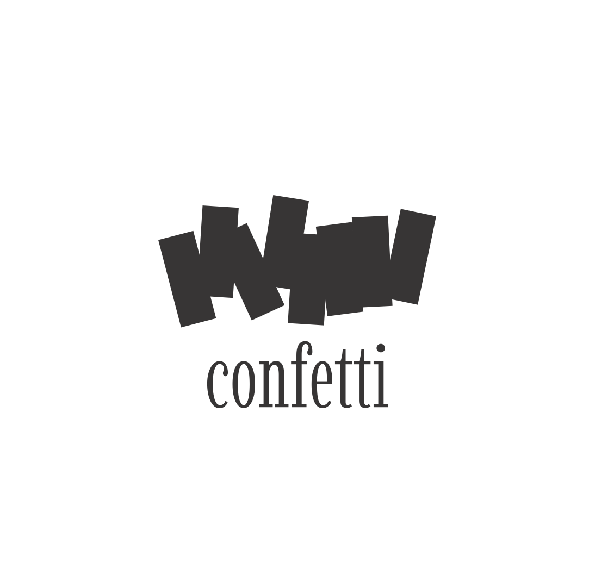
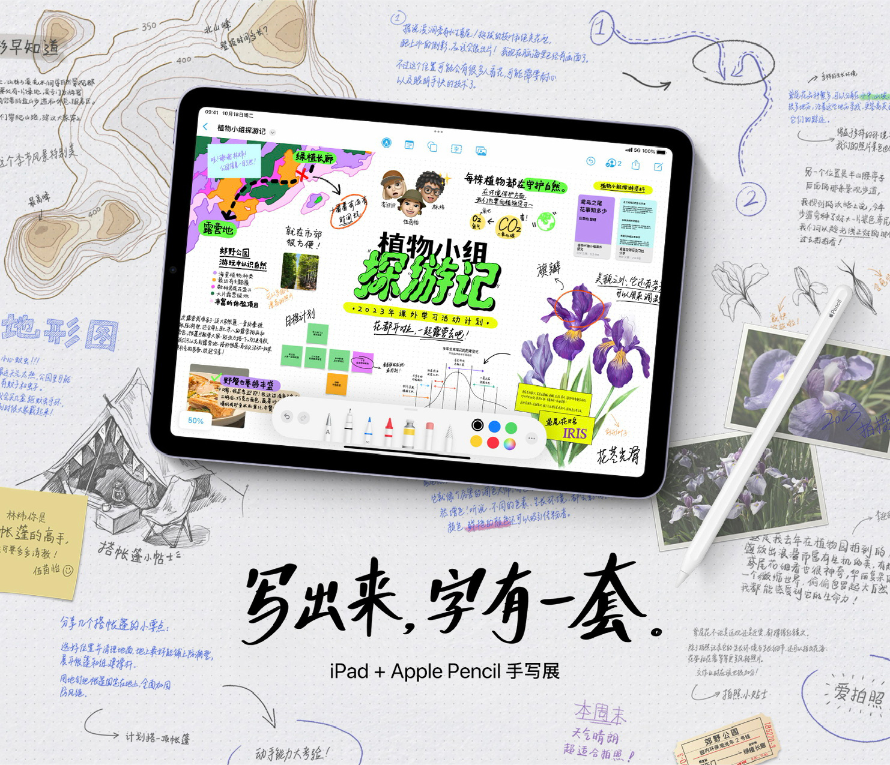

Campus Quarterly
A localization-focused production design project exploring title redesign, typography, and visual consistency across markets.
A localization-focused production design project exploring title redesign, typography, and visual consistency across markets.

A Chinese headline typeface built to match the brand's English type identity, letter by letter.
Localized the global campaign key visual for the Greater China market, adapting typography, layout, and visual assets while maintaining global brand consistency.

A stationery brand identity built around playful paper goods, everyday documentation, and expressive printed details.

Handwritten lettering and illustrations for Apple Pencil.